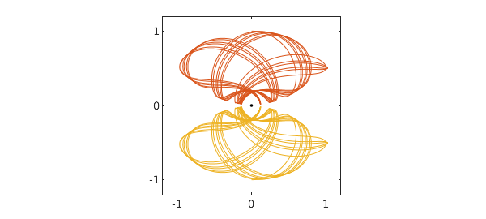
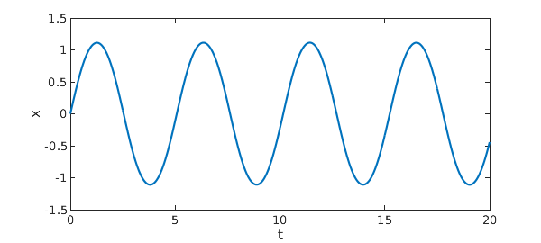
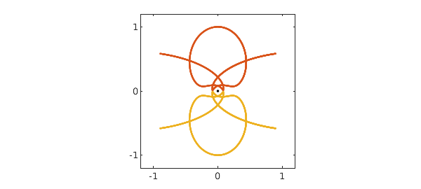
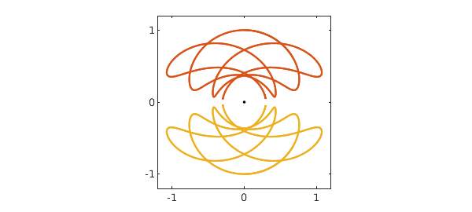
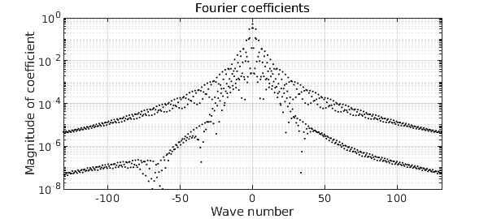
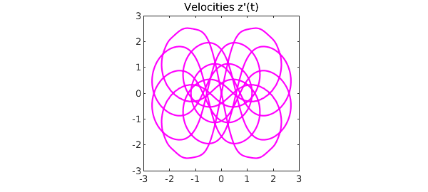

1. Typical trajectories
Here is a variation on the familiar $n$-body problem, suggested to us by Charlie Peskin of New York University. Suppose $n$ electrons of charge $-1$ are flying around a nucleus of infinite mass and charge $+n$. What do the trajectories look like? For $n=1$ it's trivial, just a circular orbit. For $n\ge 2$ one sees all kinds of disordered and chaotic trajectories, and we hope to explore some of the possibilities in a future example. In this example we consider just a very special configuration with $n=2$, in which the two electrons are assumed to be exactly symmetrical about a line of reflection. Here is a typical trajectory over a time interval of length 40. (The "splitting on" command is commented on at the end of this writeup.)
LW = 'linewidth'; MS = 'markersize'; lw = 1.2;
chebfunpref.setDefaults('splitting',true)
N = chebop(0,40);
N.op = @(t,z) diff(z,2) + 2*z./abs(z).^3 - 0.25i*imag(z)./imag(z).^3;
V = 1; N.lbc = [1i; V];
tic, z = N\0; x = real(z); y = imag(z);
plot(0,0,'.k',MS,8), hold on
plot(x,y,x,-y,LW,lw), axis(1.2*[-1 1 -1 1]), axis square, hold off
set(gca,'xtick',-1:1,'ytick',-1:1)

For this computation we have used complex arithmetic for convenience, with the nucleus at the origin. Because of the symmetry, only one particle needs to be tracked, so we have a scalar complex nonlinear second-order ODE initial-value problem: $$ z'' = {-2z\over |z|^3} + {z-\overline{z}\over |z-\overline{z}|^3}. $$ For initial conditions in this example we take $$ z(0)=i, \quad z'(0) = V > 0. $$ In the figure above, $V=1$.
Though it is not periodic, this orbit has a great deal of regularity, as we can see by plotting the $x$ component as a function of time.
plot(x), xlabel t, ylabel('x(t)'), ylim([-1.5 1.5])
This is not a chaotic problem; it is more like quasiperiodic. As $t\to\infty$, the trajectory fills up a certain region in the $x\hbox{-}y$ plane.
2. Energy
The kinetic energy of this motion is $|z'|^2$, and the potential energy is $-4/|z| + 1/2\,\hbox{Im} z$. Thus the total energy is $$ E = |z'|^2 -{4\over |z|} + {1\over 2\,\hbox{Im} z}, $$ and this quantity is conserved. For our initial value $V=1$, the energy is $E = -2.5$. (We do not verify this by a Chebfun computation, which would be very slow because of the near-singularities when $\hbox{Im}z$ is near zero.)
Note that a particle at $z=\infty$ with zero velocity has energy $0$, and our initial condition will have energy $0$ with this initial velocity: $$ V_{\hbox{crit}} = \sqrt{3.5} \approx 1.87. $$ Sure enough, with further experiments one may verify that for $V>V_{\hbox{crit}}$, the trajectory flies off to infinity. The reader may also find it interesting to explore "Pluto" trajectories just below this limit starting from values such as $V=1.85$ or $1.86$.
3. Periodic trajectories: "swing orbits"
For certain special initial velocities, the trajectories are periodic. So far, we have found two kinds of such trajectories. In the first, which we call "swing orbits", the electrons go back and forth between two extreme points, far from the nucleus, at which the velocity is zero. The simplest swing orbit corresponds to $V\approx 1.446$ and looks like this:
N.domain = [0 20]; V = 1.446; N.lbc = [1i; V]; z = N\0; x = real(z); y = imag(z); plot(0,0,'.k',MS,8), hold on plot(x,y,x,-y,LW,lw), axis(1.2*[-1 1 -1 1]), axis square, hold off set(gca,'xtick',-1:1,'ytick',-1:1)

A plot of $x$ values confirms the periodicity:
plot(x), xlabel t, ylabel x

Here is an estimate of the period $T$:
[val,pos] = min(x,'local'); T = pos(3)-pos(2)
T = 5.080062614623892
Here is another swing orbit:
V = 0.783; N.lbc = [1i; V]; z = N\0; x = real(z); y = imag(z); plot(0,0,'.k',MS,8), hold on plot(x,y,x,-y,LW,lw), axis(1.2*[-1 1 -1 1]), axis square, hold off set(gca,'xtick',-1:1,'ytick',-1:1)

Since the orbit is more complicated, it is not surprising that the period is longer:
r = roots(x-.9*max(x)); r = r(deriv(x,r)>0); T = r(2)-r(1)
T = 8.458858025795349
And here a third swing orbit with a still longer period:
V = 1.17745; N.lbc = [1i; V]; z = N\0; x = real(z); y = imag(z); plot(0,0,'.k',MS,8), hold on plot(x,y,x,-y,LW,lw), axis(1.2*[-1 1 -1 1]), axis square, hold off set(gca,'xtick',-1:1,'ytick',-1:1) r = roots(y-.9999999); T = mean(r(end-1:end))
T = 19.316951164201875

Readers trying these computations on their own may enjoy experimenting with the command comet(z), which shows the electrons flying about.
4. Periodic representation
A periodic function should have a trigonometric representation! We can compute such a representation with Chebfun's "trig" option.
First, let's make our estimate of the period a little more accurate. With the current estimate, instead of the expected value $1i$, we find this result after one cycle:
z(T)
ans = 0.000259560137241 + 1.000001673151045i
An improved estimate of T is accordingly
T = T - real(z(T))/V
T = 19.316730721603683
which gives a few more digits:
z(T)
ans = 0.000000000552381 + 1.000001630630754i
Here we construct a trigonometric representation, using a loosened tolerance since the computed orbit and period are still far from machine precision.
zT = z{0,T};
zTtrig = chebfun(zT,'trig','eps',1e-6);
These are the absolute values of the Fourier coefficients:
plotcoeffs(zTtrig,'.k')

A plot of the velocities over the course of one orbit is interesting too:
plot(diff(zTtrig),'m')
title('Velocities z''(t)')
axis([-3 3 -3 3]), axis square
set(gca,'xtick',-3:3,'ytick',-3:3)

5. Periodic trajectories: "collision orbits"
Another kind of periodic orbit arises at lower energies, which we call "collision orbits". In these orbits, the overall motion looks smooth but in fact the electrons nearly collide near the nucleus. Here is the simplest example:
N.domain = [0 10]; V = 0.13220442; N.lbc = [1i; V]; z = N\0; x = real(z); y = imag(z); plot(0,0,'.k',MS,8), hold on plot(x,y,x,-y,LW,lw), axis(1.2*[-1 1 -1 1]), axis square, hold off set(gca,'xtick',-1:1,'ytick',-1:1)
The trajectory looks smooth, but a zoom near the origin shows that it is not:
axis(0.001*[-1 1 -1 1]), axis square, hold off
Other more complicated such orbits seem to arise with $V = 0.4536, 0.5539, 0.5987, 0.6205, 0.6312,\dots.$
6. Computing time
Chebfun is wonderfully convenient, but it is not especially fast, as we can see from the computing time for this example:
total_time_in_seconds = toc
total_time_in_seconds = 36.036796000000002
Moreover, without "splitting on" as set at the beginning of this note, the time would have been about $60\%$ longer. This is because these trajectories are highly irregular, and Chebfun expends a good deal of effort constructing global representations. Let's be good citizens and turn splitting off again.
chebfunpref.setDefaults('factory')
For faster work, the first author has been exploring electron problems in Julia using Julia's ode45 command, which runs about four times faster than Matlab's ode45, which in turn (at least for medium accuracies) is faster than Chebfun.